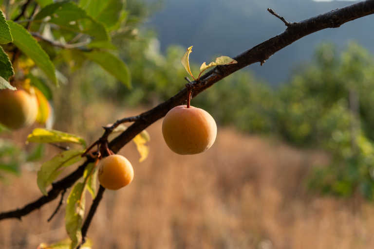
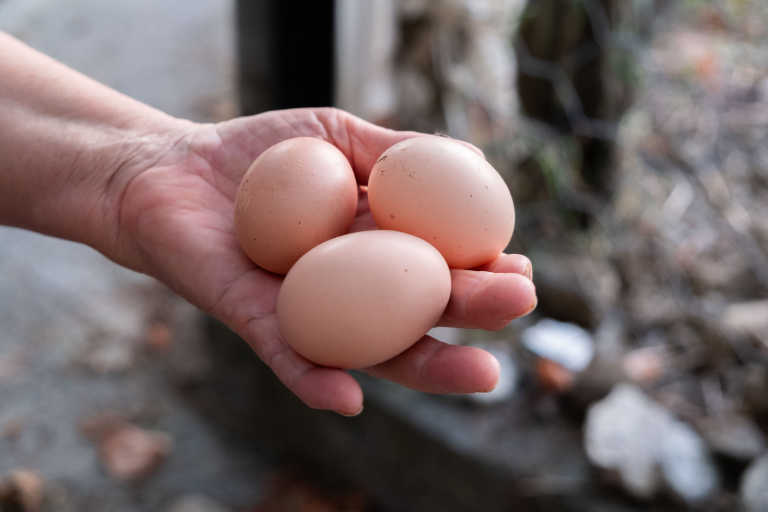
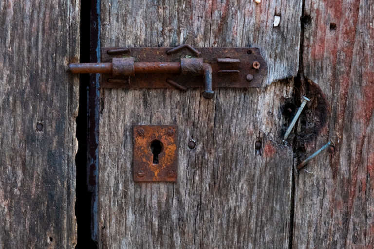
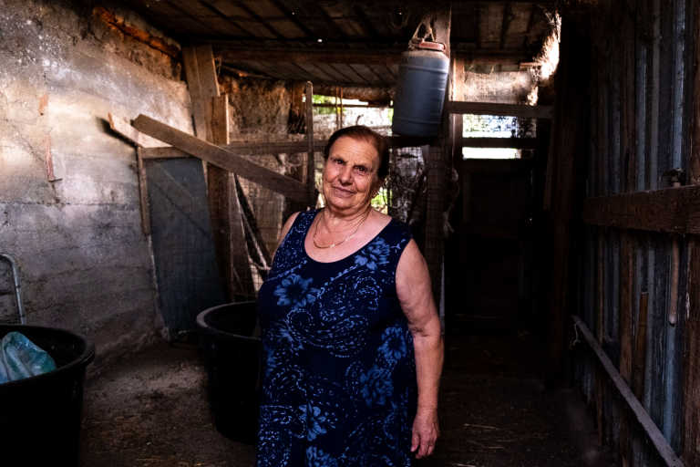
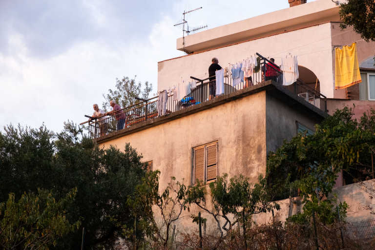

Se aprite il sito di Rinnesto potrete trovare contenuti interamente o parzialmente generati con modelli di Intelligenza Artificiale: Scelta dalla quale mi dissocio totalmente e con la quale sono fortemente in disaccordo. Questo non cancella il piacere di aver collaborato e la soddisfazione dei risultati finali.
Quest'estate durante la mia annuale migrazione in calabria, tra le varie cose, ho svolto un lavoro per un amica del luogo, intenta ad avviare un progetto che mi ha subito attratto. Una specie di laboratorio culturale con l'intento di rimettere in contatto le persone con la terra, il lavoro che ne deriva.
Progetto molto utile ad un sud ormai fin troppo devastato da turismi di massa a cui poco importa del luogo, a cui basta il mare, cose a caso ma con scritto sull'etichetta "prodotto tipico", e tutti gli altri meravigliosi confort necessari a far vedere sulle stories di instagram in che bel posto stai.
Rinnesto ha invece come intento proprio quello di spiegare il luogo, fartelo conoscere. Sei tu che vivi il territorio, non lui che vive per te.



Per il progetto ho fatto sia foto che video. Tra cui alcune interviste a Ciriaco e Assunta, i due anziani proprietari del terreno, i quali tra l'altro c'hanno tenuto ogni volta a offrirci i liquori fatti da loro, perfetti per iniziare le riprese con la vista un po' traballante.


Il montaggio del video principale unisce varie riprese del luogo con le interviste. Mi sono divertito molto col sound design con cui credo di aver fatto un ottimo lavoro.
Ho anche realizzato un video laterale che mostri solo alcuni brolls e anch'esso con un sound design molto curato.
@_iristufo_ / @_rinnesto_